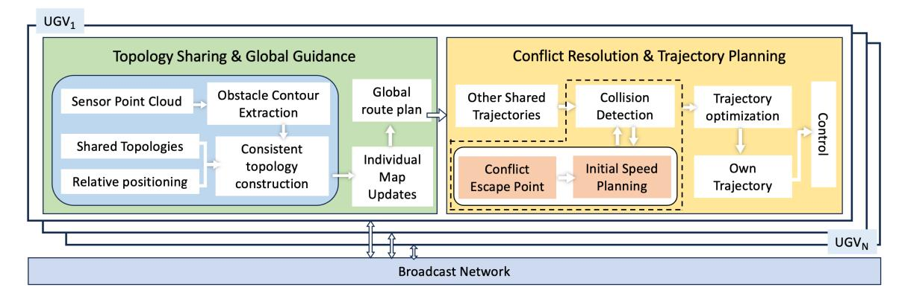
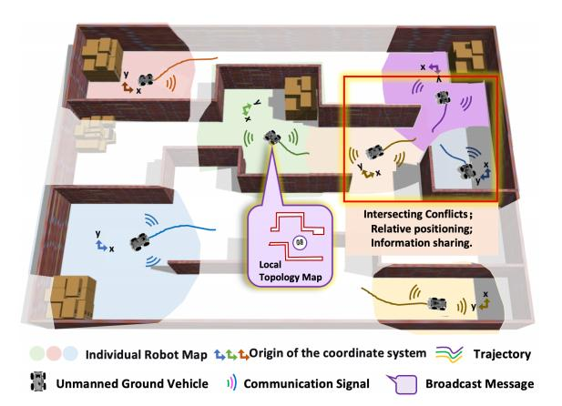
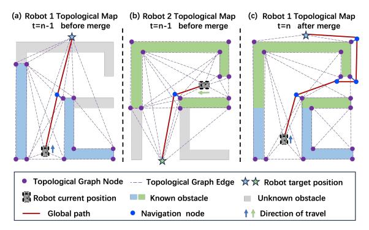
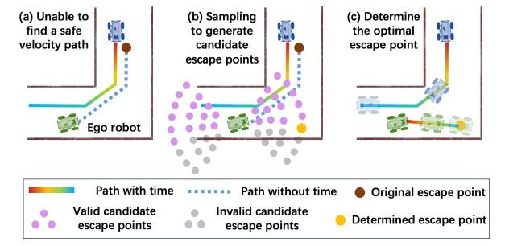
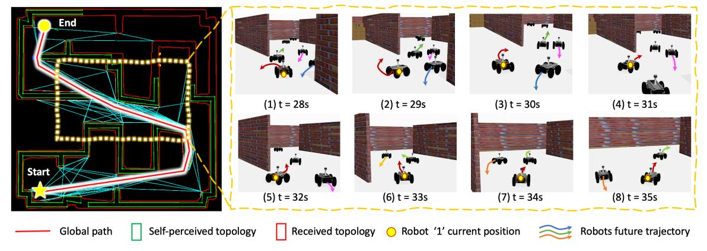
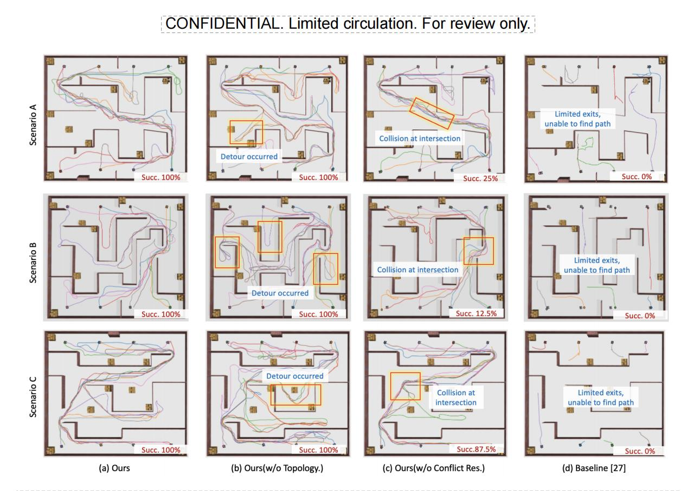
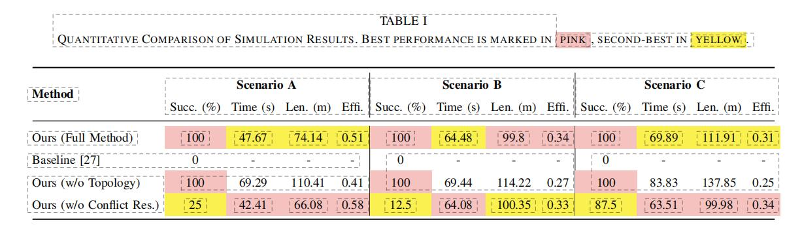
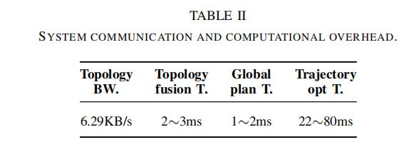
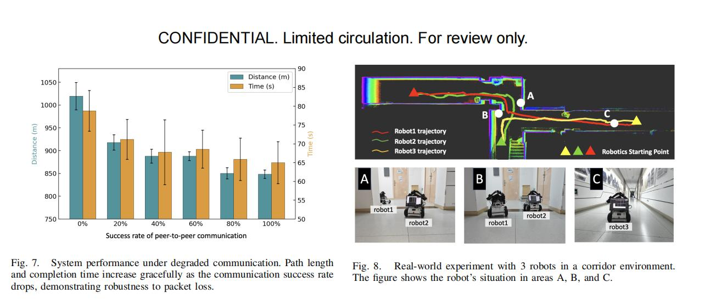

Decentralized Multi-Robot Relative Navigation in Unknown,Structurally Constrained Environments under Limited Communication
Abstract
Multi-robot navigation in unknown, structurally constrained, and GPS-denied environments presents a fundamental trade-off between global strategic foresight and local tactical agility, particularly under limited communication. Centralized methods achieve global optimality but suffer from high communication overhead, while distributed methods are efficient but lack the broader awareness to avoid deadlocks and topological traps. To address this, we propose a fully decentralized, hierarchical relative navigation framework that achieves both strategic foresight and tactical agility without a unified coordinate system. At the strategic layer, robots build and exchange lightweight topological maps upon opportunistic encounters. This process fosters an emergent global awareness, enabling the planning of efficient, trap-avoiding routes at an abstract level. This high-level plan then inspires the tactical layer, which operates on local metric information. Here, a sampling-based ‘escape point’ strategy resolves dense spatio-temporal conflicts by generating dynamically feasible trajectories in real time, concurrently satisfying tight environmental and kinodynamic constraints. Extensive simulations and real-world experiments demonstrate that our system significantly outperforms in success rate and efficiency, especially in communication-limited environments with complex topological structures.

structure

Our hierarchical framework enables a team of robots to navigateefficiently in topologically complex environments with limited communication. Global awareness emerges from sharing abstract topological maps,which guides a local metric-level planner that ensures agile and safe collision avoidance.

The topology sharing and guidance process. At time t-1, Robot 1 merges its own topology map (blue) with the received topology map (green) from Robot 2 and re-plans its global path based on the newly expanded knowledge.

The local conflict resolution process. If the initial plan towards the local goal (red point) is blocked, the robot samples candidate escape points in forward and backward sectors. It evaluates these points based on a cost function and selects the optimal one (yellow point) to generate a new, conflict-free trajectory.

An example of the system in action. (Left) The topological map constructed by Robot 1 in Scenario A, showing a complex environment with multiple paths. (Right) A snapshot of Robot 1’s first-person view as it navigates a dense central region, demonstrating effective local conflict avoidance.

Qualitative results from three challenging simulation scenarios. The robots were assigned to opposite sides of the map and navigated toward each other in a crisscross pattern. For each scenario, we show the final trajectories for: (a) Our full method, demonstrating smooth, efficient paths; (b) Our method without topology sharing, resulting in inefficient exploration of dead ends; (c) Our method without conflict resolution, leading to gridlock and collisions in central corridors; and (d) The baseline, showing robots cannot effectively navigate topologically complex environments.

chart

chart
